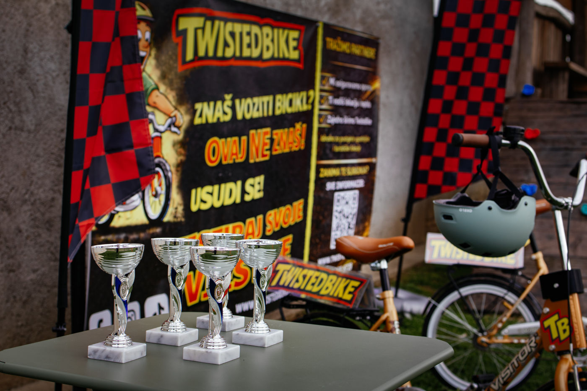
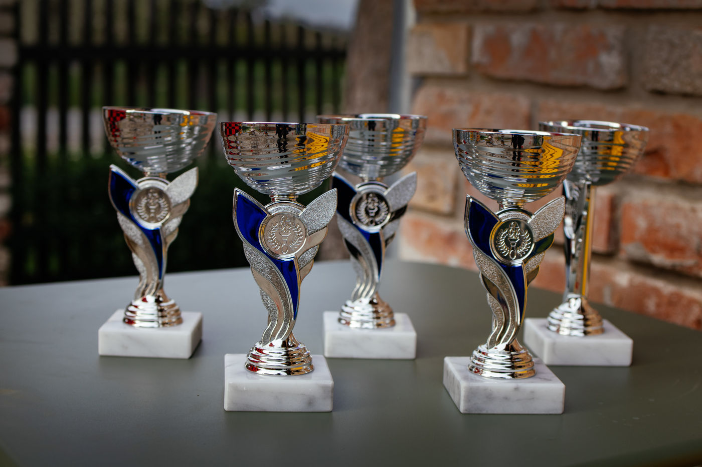
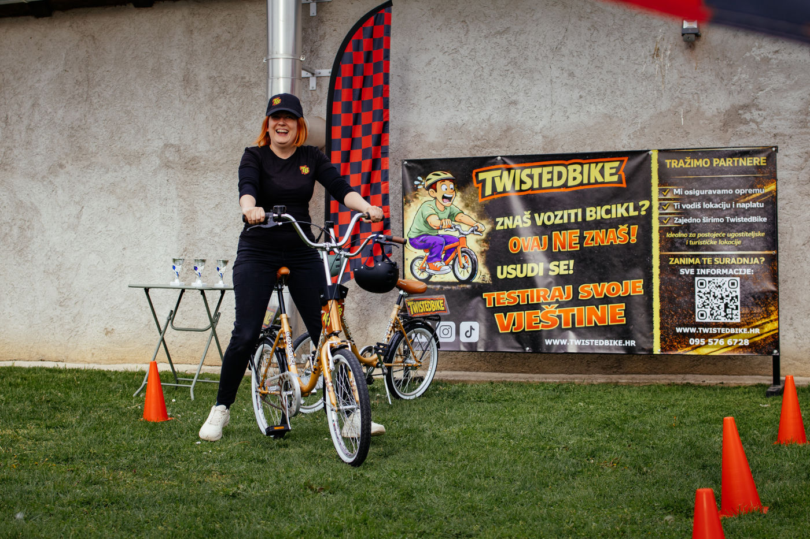
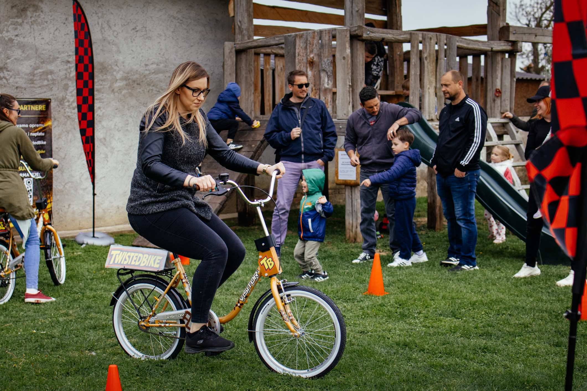

Jasna i odmah razumljiva atrakcija
Sudionici odmah razumiju osnovnu ideju, a upravo obrnuto upravljanje stvara trenutak iznenađenja koji pokreće interes i pokušaj.
Najam atrakcije za evente i prometne lokacije
Na prvi pogled djeluje jednostavno, ali upravo obrnuto upravljanje stvara iznenađenje, smijeh i želju za ponovnim pokušajem. Zato TwistedBike vrlo brzo okuplja publiku i stvara angažman oko same atrakcije.
TwistedBike je atrakcija za najam osmišljena tako da brzo aktivira publiku i stvara vidljivu dinamiku na prostoru.
Sudionici odmah razumiju osnovnu ideju, a upravo obrnuto upravljanje stvara trenutak iznenađenja koji pokreće interes i pokušaj.
Dok jedna osoba pokušava savladati bicikl, ostali gledaju, navijaju, komentiraju i snimaju. Atrakcija prirodno stvara gužvu i angažman.
TwistedBike se lako uklapa u manifestacije, turističke lokacije, sajmove, team buildinge i promotivne aktivnosti gdje je cilj privući pažnju i potaknuti sudjelovanje.
Nekoliko fotografija koje prikazuju atmosferu, reakcije sudionika i način na koji atrakcija izgleda u prostoru.




Atrakcija je jednostavna za razumjeti, ali dovoljno izazovna da zadrži pažnju i potakne ponovne pokušaje.
Na prvi pogled sve djeluje poznato i jednostavno, što olakšava uključivanje bez dugog objašnjavanja.
Kada sudionik pokuša voziti kao na običnom biciklu, bicikl reagira suprotno očekivanom i tu nastaje glavni efekt atrakcije.
Upravo ta kombinacija izazova, reakcija i ponovnih pokušaja stvara gužvu, smijeh i dodatnu dinamiku oko same postave.
TwistedBike nudimo za različite vrste događaja i lokacija, ovisno o formatu suradnje i potrebama prostora.
Za sajmove, konferencije, team buildinge, gradske manifestacije, brand activatione i druge događaje gdje je cilj privući ljude i potaknuti interakciju.
Pogledaj višeZa kampove, šetnice, trgove, hotele, resorte i druge lokacije na kojima prolaznici spontano staju, gledaju i uključuju se u sadržaj.
Pogledaj višeAko niste sigurni koji model najma vam najbolje odgovara, pošaljite osnovne informacije i predložit ćemo najpraktičniju varijantu.
Pošaljite upitKratki odgovori na ono što vas najčešće zanima.
Preporučena postava je oko 2 × 4 m ravne i stabilne podloge. Dimenzije se mogu prilagoditi prostoru.
Ne. TwistedBike ne zahtijeva električnu energiju za osnovnu postavu.
Da, atrakcija se može koristiti u zatvorenim i otvorenim prostorima, ovisno o uvjetima lokacije i kvaliteti podloge.
Postavljanje i uklanjanje traje oko 5 minuta, ovisno o lokaciji i rasporedu postave.
Sudionici dobivaju kratke upute prije vožnje, a korištenje je pod nadzorom operatera. Operater može zaustaviti pokušaj ako procijeni da nije sigurno.
Da. Vizuali i elementi oko atrakcije mogu se prilagoditi identitetu eventa, partnera ili lokacije.
Namijenjeno je širokom rasponu sudionika, a operater procjenjuje može li pojedini sudionik sigurno sudjelovati.
Pošaljite upit na info.twistedbike@gmail.com s osnovnim informacijama poput datuma, lokacije i tipa eventa ili lokacije.
Pošaljite datum, lokaciju i kratak opis događaja ili prostora, a mi ćemo vam odgovoriti s konkretnim prijedlogom suradnje.
Za dostupnost, suradnju i dodatna pitanja javite se direktno.
Email
info.twistedbike@gmail.com
Telefon
095 576 6728